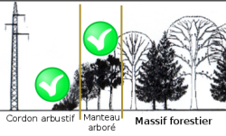

Le tableau suivant reprend les paramètres permettant de décider si des essences doivent être ou non éliminées des lisières.
Ce tableau peut être trié en cliquant sur l’en-tête de colonne (tri alphabétique ou selon la valeur de la hauteur maximale): 1 clic pour un tri croissant, 2 clics pour un tri décroissant.
Il est possible de marquer une ligne en cliquant sur celle-ci (ou plusieurs lignes avec shift ou ctrl).
Les espèces ligneuses sont sélectionnées en fonction de leur localisation et de leur hauteur maximale (colonne “Décision”):
- A maintenir 
- A maintenir (en bordure du massif)
- A enlever